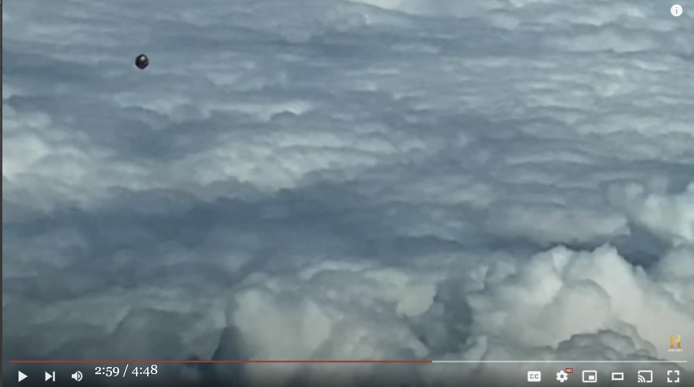

動画：2020-02、エアバス機のパイロットが撮影した立方体型 UFO → その正体を解く
履歴
(2023-01-20) 追加して完結 (2023-01-19) 作成
(2023-01-19 begin)関連
Ryan Graves : 中に黒い箱が見える透明な球体の UFO と遭遇…の件 (2023-01-11)切り出し静止画
音声書写（自動生成）
▼展開
0:01 We all keep our phones safely stowed away when driving, 0:03 right? 0:04 Well, that rule doesn't apply if you're flying on autopilot. 0:08 And lucky for us, one pilot had his 0:10 hands free and his phone ready to capture 0:12 a one-of-a-kind video. 0:14 Prepare for takeoff. 0:17 TONY HARRIS (VOICEOVER): February 2020. 0:19 An Airbus A320 is on a routine flight soaring 0:22 over Medellin, Colombia. 0:24 Little does the captain know he's about to find out 0:27 he's sharing the friendly skies. 0:29 The pilot does us the favor of showing his altimeter, 0:32 and we can see that he's flying around 30,000 feet in altitude. 0:37 TONY HARRIS (VOICEOVER): The pilot 0:39 then points his camera phone out of the cockpit window, 0:41 and watch this as he zooms in. 0:45 A metallic-looking object, a polyhedron of some sort, 0:48 whizzes by in a straight line. 0:51 We slow it down and zoom in further. 0:53 You can see it kind of looks like a cube. 0:55 MJ BANIAS: It has these kind of little points that stick out. 0:59 It does seem to be darker in color 1:01 and not like a bright, shining balloon. 1:05 Whatever this is, it definitely shouldn't be there. 1:07 TONY HARRIS (VOICEOVER): Now, it's 1:09 hard to judge this object's size without knowing 1:10 how far away it is. 1:12 But scientist Amy Eskridge estimates 1:13 it's 10 to 15 feet in diameter. 1:16 One theory is that if we were visited 1:18 by another civilization, they might send probes ahead 1:21 of when they actually come. 1:23 TONY HARRIS (VOICEOVER): And consider this. 1:25 A similar object was spotted by an FA-18 fighter pilot in 2018 1:29 at an altitude of 35,000 feet. 1:32 It still hasn't been identified. 1:33 And its structure, unlike any known airframe, 1:36 lends credence to the alien probe theory. 1:39 They might want to collect data, maybe 1:41 do a little surveillance, a little monitoring 1:43 before they actually show up. 1:46 In the US, we associate Medellin, 1:48 Colombia, with drug cartels. 1:50 But in South America, the city is known for UFO sightings. 1:53 In fact, after UFOs were spotted over a soccer stadium 1:57 and above a forest, the city earned 1:59 the title "The New Roswell." 2:01 So we're turning to our experts to see if they 2:03 can tell us what's going on. 2:10 MICHAEL PRIMEAU: I've analyzed several videos 2:11 in depth of UFOs and UAPs over the course of my career. 2:15 And the way that it's traveling on screen 2:18 in the area of the clouds does appear 2:20 to be consistent with recordings that I have deemed authentic. 2:23 TONY HARRIS (VOICEOVER): So while Primeau can't find 2:25 anything technically wrong with the video, 2:26 something just doesn't look right to him. 2:29 What caught my eye is when the camera's panning up 2:32 to the skyline, the operator instinctively 2:35 zooms in, almost like he's expecting this object as it's 2:42 coming towards the airplane. 2:44 This was peculiar to me. 2:45 So the feel of the video, upon visual analysis, feels staged. 2:50 TONY HARRIS (VOICEOVER): But Primeau thinks 2:52 it's possible the pilot was just plain 2:53 lucky to zoom in right as the object flies past the plane. 2:57 MJ Banias agrees. 2:58 Pilots are the people who work in the sky and operate in it, 3:02 so they're going to have the best view of any potential UFOs 3:06 around them. 3:07 TONY HARRIS (VOICEOVER): We turned 3:08 this video over to our aviation expert, Tim McMillan. 3:11 He thinks whatever was shot over Medellin is too slow to be 3:14 any kind of plane or missile, and it 3:16 looks nothing like a drone. 3:17 TIM MCMILLAN: Initially, when it starts coming, 3:19 I thought, it's probably a balloon. 3:21 TONY HARRIS (VOICEOVER): Regular helium balloons rarely 3:24 make it to this altitude. 3:25 When they get this high, the helium 3:27 expands and the balloon pops. 3:29 But solar balloons are different. 3:31 Used as toys or for research, they're 3:33 usually made from dark material to absorb the sun's heat. 3:36 They rise as the air inside warms and expands. 3:39 They've gone as high as 46,000 feet. 3:41 But in general, when they hit the cooler air up high, 3:44 they start to lose shape and altitude. 3:46 It's just too cold for them to stay aloft. 3:48 TIM MCMILLAN: It almost seems to have an odd cube-like shape. 3:52 That is exactly what the Navy pilots 3:55 have reported seeing off the East 3:58 Coast of the United States. 4:00 They're currently part of the unidentified aerial phenomena 4:03 that's being investigated by the Department of Defense. 4:06 I don't have a good explanation. 4:11 So assuming it's not a hoax, it's certainly not 4:15 a drone or a known aircraft. 4:17 It's possibly a balloon. 4:18 I mean, when you look at that speed, your mind goes there. 4:21 But it's extremely rare for a solar balloon 4:24 to reach this altitude. 4:25 By process of elimination, we'll go with genuine UFO. 4:30 So humans might not be the only pilots up in the sky.DeepL 原文不完全
運転するときは、みんな携帯電話を安全にしまっています。 携帯電話をしまっていますよね？ しかし、自動操縦で飛行しているときは、そのルールは適用されません。 幸運なことに、あるパイロットは あるパイロットは、両手を自由にし、携帯電話で ユニークな動画を撮影することができました。 離陸の準備 トニー・ハリス（ナレーション）: 2020年2月。 エアバスA320は定期便でコロンビアのメデジン上空を飛行中。 コロンビア・メデジン上空を飛行中。 機長は自分が友好的な空を共有していることを 機長も知らない。 パイロットは高度計を見せながら、私たちに親切に教えてくれます。 パイロットは高度計を見せ、高度3万フィート付近を飛行していることがわかります。 トニー・ハリス（ナレーション）: パイロットは カメラ付き携帯電話をコックピットの窓に向けました。 ズームインして見てください。 金属っぽい物体で、ある種の多面体です。 一直線に通過していきます。 スロー再生して、さらにズームイン。 立方体のように見えるのが分かります。 このように小さな点が突き出ています。 色も暗いようです。 明るい光り輝く風船ではありません。 これが何であれ、間違いなくそこにあるべきものではありません。 トニー・ハリス(ナレーション): さて、この物体の大きさを この物体の大きさを判断するのは難しいです。 大きさを判断するのは難しい しかし、科学者エイミー・エスクリッジの推定では 直径10～15フィートと推定しています。 一説によると、もし私たちが他の文明の訪問を受けたら 他の文明が訪れた場合、彼らは実際に訪れるよりも先に探査機を送るかもしれない。 探検機を送るかもしれないという説があります トニー・ハリス(ナレーション): そして、これを考えてみてください。 同様の物体が2018年にFA-18戦闘機のパイロットによって発見されました。 高度35,000フィートで。 それはまだ特定されていません。 そして、その構造は、既知の機体とは異なり、 エイリアンの探査機説に信憑性を与えています。 彼らはデータを集めたいのかもしれない、多分 少しの監視とモニターをする 実際に現れる前に 米国ではメデジンを連想する コロンビアのメデジンは麻薬カルテルと結びついている。 しかし、南アメリカでは、この街はUFOの目撃例で知られています。 実際、サッカースタジアムや森の上空でUFOが目撃されたことから 南米では、UFOが目撃されることで有名です。 "新ロズウェル "と呼ばれています そこで、今回は専門家の意見を聞いてみました。 専門家に聞いてみました。 マイケル・プリモー: 私はいくつかのビデオを分析しました。 UFOとUAPのビデオを分析しました。 そして、画面上の雲の領域で移動している様子は 雲の領域で移動しているように見えますが 私が本物と見なした記録と一致しています。 トニー・ハリス(ナレーション): プリモーはこの映像に技術的な問題はないと言っていますが 技術的には何も問題ないようです 何か違和感があるようです。 私の目を引いたのは、カメラがスカイラインをパンするときです。 カメラがスカイラインに向かうとき、オペレーターが本能的に まるでこの物体が飛行機に向かってくるのを予期していたかのようです。 まるで、飛行機に向かってくる物体を予期しているかのように。 これは、私にとっては奇妙なことでした。 この映像は、視覚的に分析すると、演出されているように感じられるのです。 トニー・ハリス（ナレーション）: しかし、プリモーは パイロットが単に運が良かっただけかもしれない 幸運にも物体が飛行機を通り過ぎた瞬間にズームインしたのだと思います。 MJバニアスも同意見です。 パイロットは空で働き、空で活動する人たちです。 だから、パイロットはUFOを最もよく見ることができる。 を見ることができる。 トニー・ハリス(ナレーション): 私たちはこのビデオを航空専門家である このビデオは航空専門家、ティム・マクミランに渡しました。 彼は、メデジン上空で撮影されたものは、飛行機やミサイルの種類にしては遅すぎると考えています。 飛行機やミサイルの類いではなく ドローンでもないようです。 最初に、それが来始めたとき、私は思った。 おそらく風船だろうと思いました。 トニー・ハリス（ナレーション）: 通常のヘリウム気球は この高度に到達することは稀です。 この高さまで上がると、ヘリウムが膨張して が膨張し、気球は破裂します。 しかし、ソーラーバルーンは違います。 ソーラーバルーンは、おもちゃや研究用として使われます。 太陽の熱を吸収するために、暗い色の素材でできています。 中の空気が温まり膨張すると上昇します。 高度4万6,000フィートまで上昇したこともある。 しかし、一般的に、高地の冷たい空気に触れると、 形が崩れ、高度が下がる。 上空に留まるには寒すぎるのです。 TIM MCMILLAN: まるで立方体のような奇妙な形をしていますね。 海軍のパイロットが報告した アメリカ東海岸で見たという アメリカ東海岸で目撃されたものです。 彼らは現在、未確認航空現象の一部であり、 国防総省が調査しているものです。 うまく説明できないのですが デマでないと仮定すれば、それは確かに ドローンや既知の航空機ではなく 気球の可能性があります。 あの速度を見ると、頭がそこに向かってしまうんです。 しかし、太陽気球がこの高度に到達するのは極めて稀です。 この高度に到達するのは極めて稀です 消去法でいくと、本物のUFOになります。 つまり、上空を飛ぶパイロットは人間だけではないのです。動画(4:48)
The Proof Is Out There: CUBE-SHAPED UFO SHOCKS PILOT (Season 2)コメント
- 以下、この動画が捏造でないと仮定して…。この正体は ・カメラや GPS などを格納した箱(*1) ではなかろうか。 - 最初、気球に吊り下げられて高高度に達したが気球との連結が取り付け不具合によって外れて（or 切れて）、箱だけが自由落下しているところを、この航空機がすれ違ったのだろう。箱と航空機の相対速度が自由落下速度より格段に大きい事と、気流に乗っているために、あたかもこの立方体が水平飛行してるかのように錯覚した…と。(*1)
- Youtube には、一般人がそういった箱を取り付けた気球で高高度から撮影した動画が数多く up されている。雑な作りのものも多いから、不具合も発生しやすい筈。 (2023-01-19 end)
(2023-01-20 begin)前置き
- 昨日の記事で- 最初、気球に吊り下げられて高高度に達したが気球との連結が不具合によって切れて、箱だけが自由落下しているところを、この航空機がすれ違ったのだろう。と述べたが、それを例証するデータを追加しておく。航空機パイロットが垂れ幕？を吊り下げた気球に遭遇し撮影した動画
https://youtube.com/shorts/PoiNbxEkfKI?feature=share高高度気球に吊り下げる箱の具体例
動画
introduction to habhub predictor for high altitude ballooning気球に吊り下げた箱の画像
コメント
- 今回のタイトルの事例から過去記事 Ryan Graves : 中に黒い箱が見える透明な球体の UFO と遭遇…の件 (2023-01-11) の事例で取り上げた ・Ryan Graves が戦闘機から目撃した中に黒い箱が見える透明な球体の UFO の正体は ・高高度気球から連結が切れた「透明樹脂製の球体カプセルに収めた箱」 で、気流に流されながら自由落下している状態のソレと遭遇したのだと判断するのが妥当だと思える。 (2023-01-20 end)
初出
動画：2020-02、エアバス機のパイロットが撮影した立方体型 UFO → その正体は… （完結） (2023-01-20)